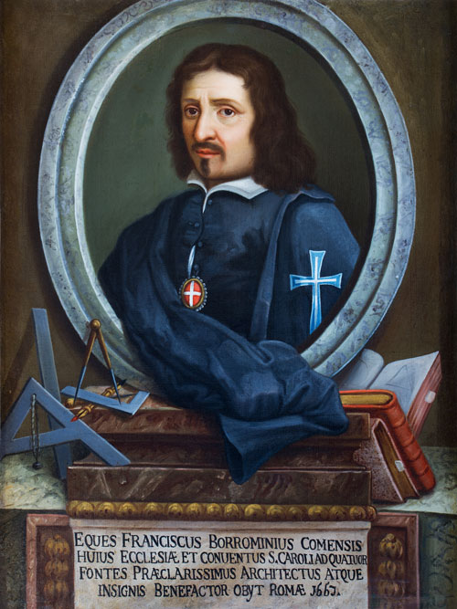

Análisis del estilo de Francesco Borromini
Un recorrido por su lenguaje arquitectónico, geometría y tratamiento del espacio
Estilo arquitectónico
Su estilo se distingue por su innovación formal y espacial, alejándose de la arquitectura barroca convencional. Empleaba curvas complejas, pliegues y contracciones que generaban efectos visuales dinámicos y sorprendentes. Sus fachadas y espacios interiores reflejan un profundo sentido de ritmo y movimiento, donde la luz y la sombra juegan un papel central. Este enfoque experimental evidencia su capacidad para transformar la geometría en emoción y experiencia sensorial.
Influencia en la arquitectura contemporánea
La arquitectura de Borromini ha sido estudiada y reinterpretada por arquitectos contemporáneos, quienes valoran su aproximación a la forma y al espacio como lugares de posibilidad. Sus procedimientos topológicos, inflexiones y pliegues anticipan conceptos que hoy se utilizan en arquitectura experimental y deconstructivista. Esta influencia demuestra cómo su legado sigue siendo relevante más de tres siglos después, inspirando nuevas exploraciones formales y espaciales.
